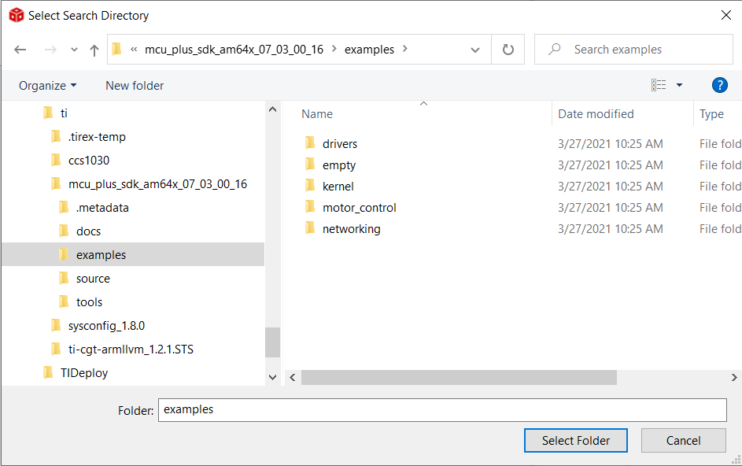
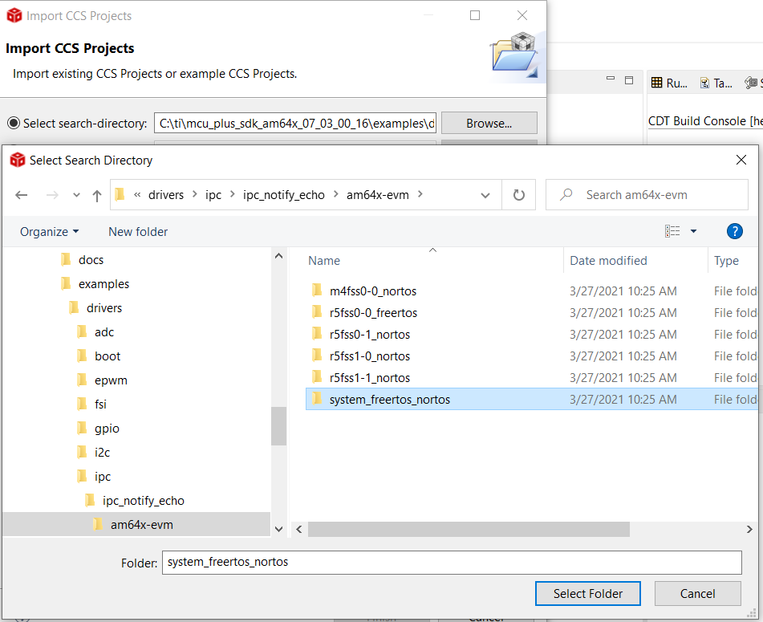
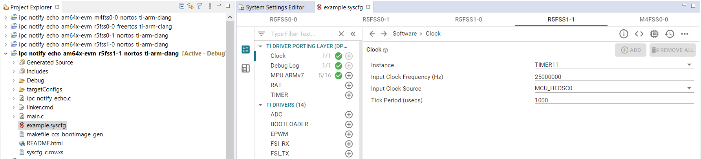
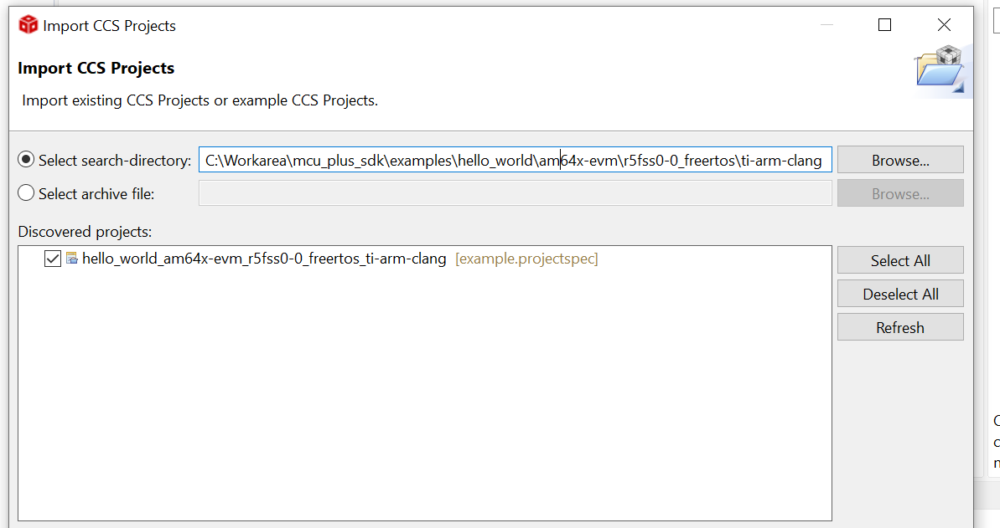
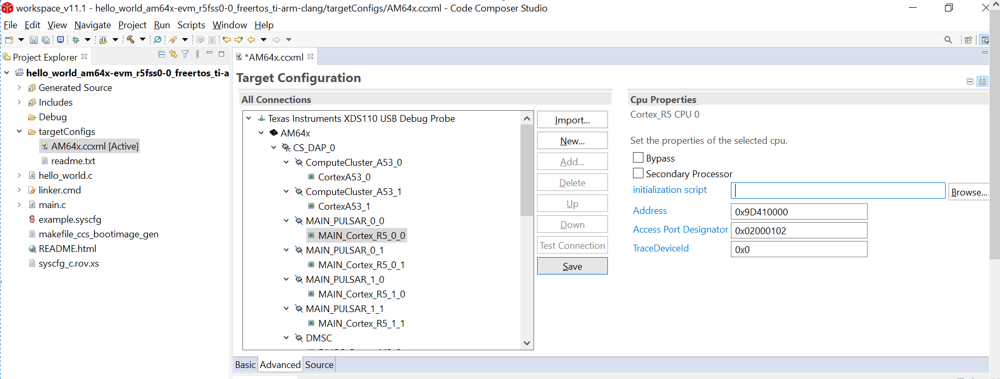
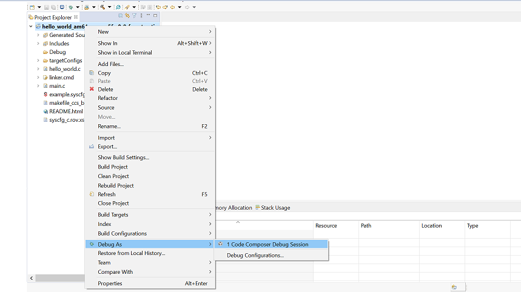
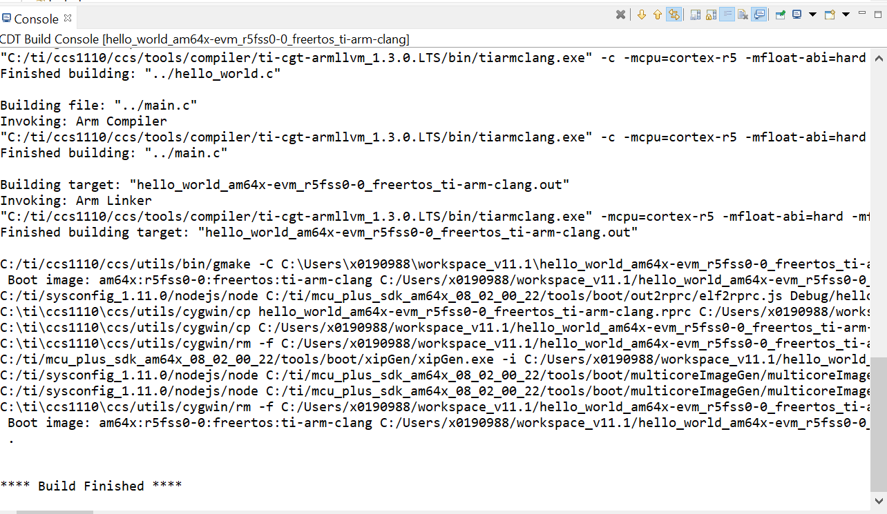

- Note
- The steps on this page show screen shots and description based on Windows. However the steps in Linux would remain the same, unless mentioned otherwise.
-
By default, CCS import of SDK example projects performs a copy of example files to CCS workspace. User are free to modify the example files without affecting the files in the SDK installed location.
-
Deleting the CCS project, deletes the project files from CCS workspace. User should be careful especially when the copied example files are modified by user.
-
The screen shots shown on this page are for AM64x MCU+ SDK v7.3.0. You would see your specific SOC and SDK version that is installed. However the instructions and steps mentioned remain the same, unless mentioned otherwise.
Introduction
All SDK examples can be built using CCS projects. Using CCS projects one can also open SysConfig from within CCS itself to configure the example. This section provides basic instructions and tips on using CCS projects.
- Note
- To re-build libraries you need to use makefiles, see Using SDK with Makefiles
CCS Projectspec and CCS Projects
- When a example project is imported into CCS, what is really getting imported is a
projectspec file.
- This file is a definition or blueprint of a CCS project, like compiler options, files to compile, libraries to link.
- CCS takes the projectspec as input and then generates CCS project files in the user workspace.
- Default workspace is,
C:/Users/{user name}/workspace_v{CCS major version}/{project name}/
- The
projectspec is also human readable, i.e you can open it in a text editor to see all the different options for that project.
Import a Project in CCS
- First open the "project explorer" as shown below
- "Right-click" in the project explorer window to import a project
- Click "Browse" and go to ${SDK_INSTALL_PATH}/examples/ folder

Select Examples Folder
- This will list all example projects, now you can select one or more or all projects to import into CCS.
- All examples follow below naming convention to help you easily pick the example you need
{example name}_{soc board}_{cpu}_{os}_{compiler toolchain}
- You can also navigate to the example folder to pick a specific example. All examples are organized as below in the examples folder.
examples/{component or module}/{optional sub-module or sub-component}/
|
+ -- {example name}/{board on which this example can run}/
|
+ -- {cpu}_{os}/{compiler toolchain}
|
+ -- example.projectspec --> This is the file that CCS imports.
Browse a Project in CCS
- Once a example project is imported, you can learn more about the example, by clicking the "README.html" file
- You can explore other project files by clicking on them.
Build a Project in CCS
- To build a project "right-click" on the project name and select "Build Project" to build it
- By default it builds in "debug" profile, i.e without compiler optimizations. To build with compiler optimizations, select "release" profile by clicking, "Build Configurations > Set Active > Release" as shown below.
- You can explore additional project options in the same menu.
Build System Projects in CCS
- Some examples, to run correctly, need multiple binaries on different CPUs to be built, loaded and run. Such examples have "system projects" associated with them. One such example is inter-processor communication example, which shows multiple CPUs communicating among each other.
- System projects make it convenient to import one system project which in turn imports the grouped CPU specific projects.

System Project Import
- System project have a naming convention as below
{example name}_{soc board}_system_{os or tag}_{compiler toolchain}
- And the project file is located at
examples/{component or module}/{optional sub-module or sub-component}/
|
+ -- {example name}/{board on which this example can run}/
|
+ -- system_{os or tag}/
|
+ -- system.projectspec --> This is the file that CCS imports.
- After import, one can browse and build the individual CPU specific projects as before
- You can also build the system project which will in turn build the grouped CPU projects.
- You can also launch SysConfig GUI using the individual projects that were imported as part of the "system" project. However now, SysConfig will show the configuration of all CPUs in a single SysConfig window. (see also Using SDK with SysConfig)

SysConfig view with System Projects
1 Click Debug with CCS Projects
- Projects imported in CCS can also be loaded and run on the EVM with single click. Please note this uses SOC initialization method SOC Initialization
- Please make sure you have completed the steps required mentioned in Prerequisites
- Import the project as shown below

Browse And Select Project
- As 1 click debug works with SOC initialization method, please remove gel file paths from the default target configuration "..\..\emulation\gel\AM64x\CPU_reset.gel" and Save.

Remove Gel Reference From Default Target Configuration
- Right click on the project and select the Code Composer debug session as shown below

Code Composer Debug Session
- Select the Core to run
- This will build the example internally as shown below

Console Output Build Example
- The target configuration is launched and the example is loaded on the core and halts in Main
- Click on the resume to run the example
- The program output will be seen on CCS console, and/or UART terminal, if enabled. Below shows a sample output on both CCS console and UART console, after running the "hello world" program.
Load and Run Executables Built with CCS Projects
- Simply load and run binary .out on EVM using CCS (see CCS Launch, Load and Run)
- In case of "system" examples, you need to load the binaries for each CPU one by one in CCS and then run each CPU. Typically the order of load and run of different CPUs is not important.
Delete a Project in CCS
- To delete a imported project "right-click" on the project name and select "Delete" to delete it.
- It is recommended to check the box as shown below, else you will have trouble re-importing the project
- Note, that deleting a project, only deletes it from your CCS workspace, the .c, .h and other project files are located with the ${SDK_INSTALL_PATH}/examples and these are not deleted.
- You can reimport a project later as needed.
 1.8.20
1.8.20